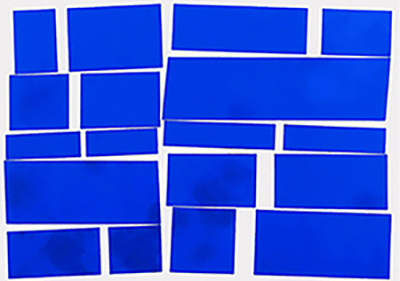
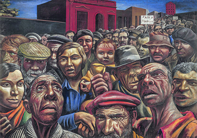
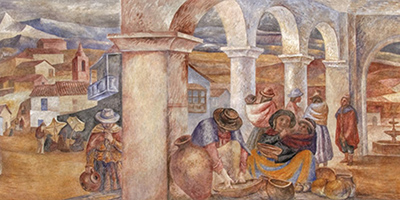
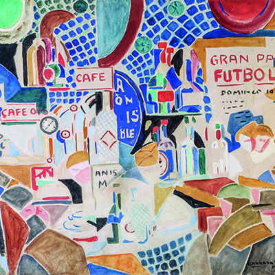
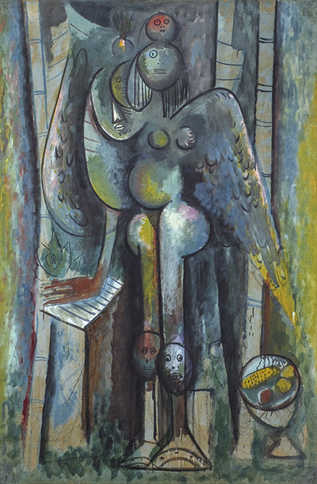
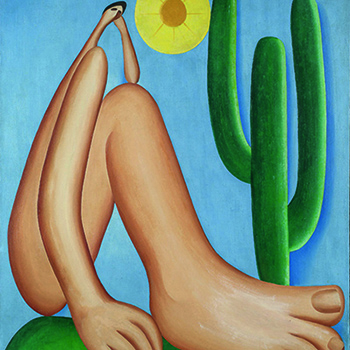
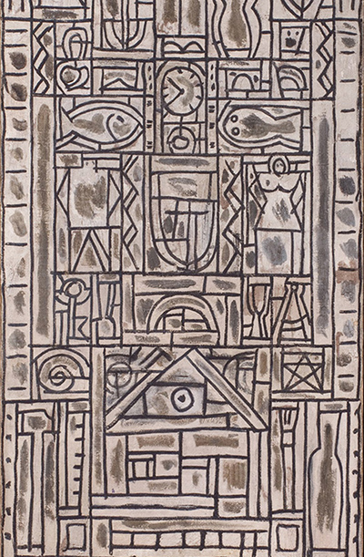
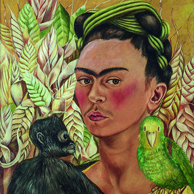
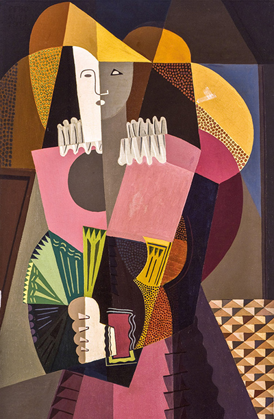

COLECCIÓN ONLINE
Metaesquema, 1958
Helio Oiticica

Manifestación, 1934
Antonio Berni

Mercado colla o Mercado del altiplano, 1940
Antonio Berni

Quiosco de Canaletas, 1918
Rafael Barradas

La mañana verde, 1943
Wifredo Lam

Abaporu, 1928
Tarsila do Amaral

Composition symétrique universelle en blanc et noir, 1931
Joaquín Torres-García

Frida Kahlo, 1942
Autorretrato con chango y loro

La del abanico verde, 1919
Emilio Pettoruti
